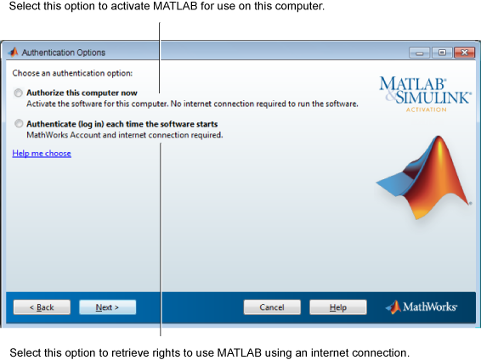

このコンピューターで使用する MATLAB® のアクティベーションを行う場合は、[このコンピューターを今すぐ承認] を選択します。
MATLAB の使用権限を付与するライセンス ファイルは、コンピューターに保存されます。
インターネット接続を使用して MATLAB を起動するたびにライセンスを取得する場合は、[ソフトウェアが起動するたびに認証 (ログイン)] を選択します。
このオプションを選択する場合、ソフトウェアの使用中はコンピューターが MathWorks® に常時インターネット接続していなければなりません。ライセンス ファイルはコンピューターに保存されません。

[次へ] をクリックして続行します。